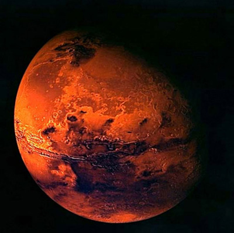
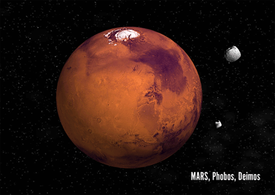

Marte

- Marte, se roteste in jurul axei in 24 de ore si 37 min.
- Se invarte în jurul Soarelui in 1.88 ani pamanteni.
- Temp maxima, este de 27 ° C.
- Temperatura cea mai scazuta : -123 ° C.
- Diametrul: 6,794 km.
- Gravitia: 0.38 X din cea a Pamantului.
- Are o atmosfera subtire, formata din dioxid de carbon.
- Are 2 luni, si nu are inele.
- În 1996, un om de stiinta a gasit dovezi de existenta a unor bacterii fosilizate într-un meteorit care se crede ca a provenit de pe Marte-probabil, cu mult timp în urma, Marte a avut viata!
- A fost vizitata de Viking 1 & 2, Pathfinder, Mars Global Surveyor, Spirit, Opportunity, Phoenix si o serie de alte sonde spatiale.

Marte este, pornind dinspre Soare, a patra planeta a sistemului solar, a carei denumirea provine de la Marte, zeul roman al razboiului. Uneori mai este numita si „planeta rosie” datorita înfatisarii sale vazuta de pe Pamânt. Culoarea rosiatica se explica prin prezenta pe suprafata sa a oxidului de fier.